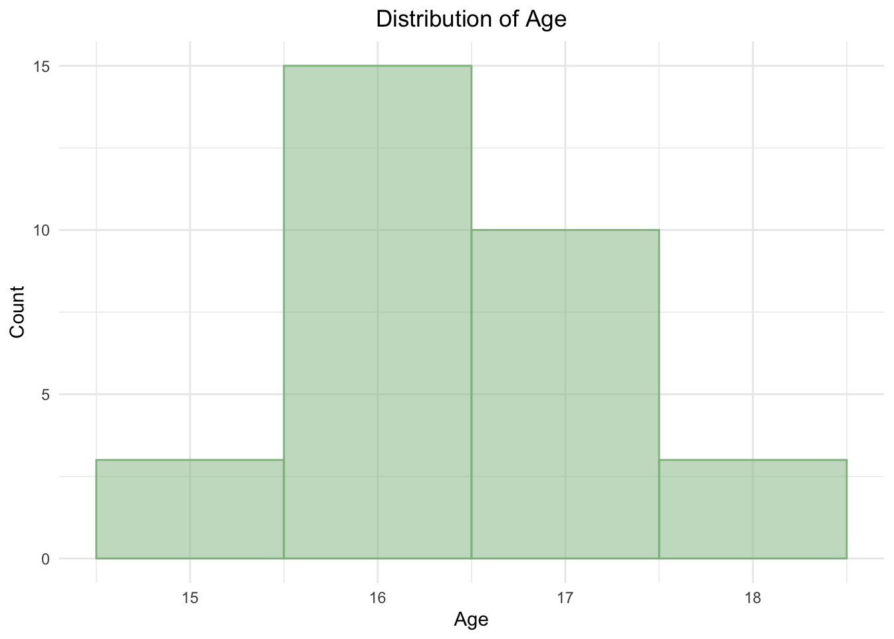

Show code
# Load required packages
library(readxl)
library(tidyverse)
library(rstatix)
library(ggpubr)
library(car)
library(knitr)
library(kableExtra)
library(afex)
library(emmeans)
library(broom)This project aims to investigate the impact of different reading strategies — highlighting, underlining, and reading without annotations — on reading comprehension. Using a within-subjects experimental design, participants engage with standardized reading passages and complete comprehension tests under each condition. The study also explores the relationship between the amount of text highlighted/underlined and comprehension scores.
Null Hypothesis (\(H_O\)): There is no significant difference in reading comprehension scores across the three strategies (highlighting, underlining, and reading without annotations).
Alternative Hypothesis (\(H_A\)): There is a significant difference in reading comprehension scores across the three strategies, with at least one strategy leading to higher scores.
(Insert figures of highlighted, underlined, unannotated passages later here)
Overall, this study aims to contribute to a deeper understanding of effective reading strategies and their implications for study habits and learning outcomes.
The first step is to load the required packages and read the data file containing participant responses. We then inspect the first few rows of the dataset to understand its structure.
# Load required packages
library(readxl)
library(tidyverse)
library(rstatix)
library(ggpubr)
library(car)
library(knitr)
library(kableExtra)
library(afex)
library(emmeans)
library(broom)# Read the data file containing participant responses and inspect the first few rows
df <- read_excel("./data/participant_responses.xls")
kable(head(df), align = "c", caption = "First Six Rows of the Dataframe")| id | age | gender | passive_score | underline_score | highlight_score |
|---|---|---|---|---|---|
| 1 | 15 | m | 60 | 60 | 90 |
| 2 | 16 | f | 60 | 70 | 90 |
| 3 | 16 | f | 90 | 100 | 80 |
| 4 | 16 | m | 70 | 80 | 90 |
| 5 | 17 | m | 70 | 80 | 90 |
| 6 | 17 | m | 100 | 100 | 60 |
The next step is to validate the data and perform any necessary preprocessing steps to ensure that the data is clean and ready for analysis.
We first check the data types of each column in the dataframe. This will help us identify any columns that need to be converted to a different data type for analysis.
# Check the data types of each column in the dataframe
kable(sapply(df, class), col.names = c("Column Name", "Column Data Type"), align = "c",
caption = "Data Type of Each Feature")| Column Name | Column Data Type |
|---|---|
| id | numeric |
| age | numeric |
| gender | character |
| passive_score | numeric |
| underline_score | numeric |
| highlight_score | numeric |
Since the categorical variable gender is currently stored as a character vector, we convert it to a factor with appropriate labels for better interpretability.
# Turn the categorical variable "gender" into a factor
df$gender <- factor(df$gender, levels = c("f", "m"), labels = c("Female", "Male"))
# Verify whether the gender variable has been successfully transformed into a factor
cat("The 'gender' column type has been successfully converted to a factor:", is.factor(df$gender))The 'gender' column type has been successfully converted to a factor: TRUEWe also check for any missing values in the dataframe, as these can impact the results of our analysis.
# Check for any missing values in the dataframe
missing_values <- df %>%
summarise_all(~sum(is.na(.)))
kable(missing_values, align = "c", caption = "Number of Missing Values in Each Column")| id | age | gender | passive_score | underline_score | highlight_score |
|---|---|---|---|---|---|
| 0 | 0 | 0 | 0 | 0 | 0 |
There are no missing values in the dataframe, so we can proceed with the analysis without needing to handle any missing data.
Before moving on to the actual analysis, we stack the data to convert it from wide to long format. This will make it easier to analyze and visualize the data.
# Stack the data to convert it from wide to long format for easier analysis and visualization
df_long <- df %>%
select(-gender, -age) %>%
pivot_longer(
cols = c(passive_score, underline_score, highlight_score),
names_to = "strategy",
values_to = "score") %>%
arrange(strategy, id)
df_long$strategy <- as.factor(df_long$strategy)
df_long$id <- as.factor(df_long$id)
# Verify the first few rows of the stacked dataframe
kable(head(df_long), align = "c", caption = "First Six Rows of the Stacked Dataframe")| id | strategy | score |
|---|---|---|
| 1 | highlight_score | 90 |
| 2 | highlight_score | 90 |
| 3 | highlight_score | 80 |
| 4 | highlight_score | 90 |
| 5 | highlight_score | 90 |
| 6 | highlight_score | 60 |
We now perform exploratory data analysis to understand the distribution of participant characteristics and reading comprehension scores across different strategies.
# Show the overall summary of statistics for the dataframe
kable(summary(df), align = "c", caption = "Summary Statistics of the Dataframe")| id | age | gender | passive_score | underline_score | highlight_score | |
|---|---|---|---|---|---|---|
| Min. : 1.0 | Min. :15.00 | Female:15 | Min. : 30.00 | Min. : 40.00 | Min. : 50.00 | |
| 1st Qu.: 8.5 | 1st Qu.:16.00 | Male :16 | 1st Qu.: 60.00 | 1st Qu.: 60.00 | 1st Qu.: 70.00 | |
| Median :16.0 | Median :16.00 | NA | Median : 70.00 | Median : 80.00 | Median : 80.00 | |
| Mean :16.0 | Mean :16.42 | NA | Mean : 67.74 | Mean : 73.55 | Mean : 78.71 | |
| 3rd Qu.:23.5 | 3rd Qu.:17.00 | NA | 3rd Qu.: 80.00 | 3rd Qu.: 80.00 | 3rd Qu.: 90.00 | |
| Max. :31.0 | Max. :18.00 | NA | Max. :100.00 | Max. :100.00 | Max. :100.00 |
# Visualize the distribution of the age of participants
ggplot(df, aes(x = age)) +
geom_histogram(binwidth = 1, fill = "darkseagreen", alpha = 0.5, colour="darkseagreen") +
labs(title = "Distribution of Age", x = "Age", y = "Count") +
theme_minimal() +
theme(plot.title = element_text(hjust = 0.5))
As the experiment was conducted on high school students preparing for the SAT test, the age range is relatively narrow with most participants being 16-17 years old.
# Visualize the distribution of the gender of participants
ggplot(df, aes(x = gender)) +
geom_bar(aes(colour = gender, fill = gender), alpha = 0.5) +
labs(title = "Distribution of Gender", x = "Gender", y = "Count") +
theme_minimal() +
theme(plot.title = element_text(hjust = 0.5))As both boys and girls have been roughly equally represented in this experiment, this ensures that the results are not heavily impacted by gender.
# Visualize the distribution of reading comprehension scores by strategy as boxplots
ggplot(df_long, aes(x = strategy, y = score)) +
geom_boxplot(colour = "darkseagreen", outlier.color = "red") +
geom_jitter(colour = "darkseagreen", alpha = 0.5, size = 2, width = 0.4, height = 0) +
labs(title = "Boxplot of Score Distributions by Reading Strategy", x = "Reading Strategy", y = "Score (%)",
caption = "Any outliers are represented by red points"
) +
ylim(0, 100) +
theme_minimal() +
theme(plot.title = element_text(hjust = 0.5))# Visualize the distribution of reading comprehension scores by strategy as density plots
ggplot(df_long, aes(x = score, fill = strategy, colour = strategy)) +
geom_density(alpha = 0.5) +
labs(title = "Density Plot of Score Distributions by Reading Strategy",
x = "Test Score (%)", y = "Density") +
theme_minimal() +
theme(plot.title = element_text(hjust = 0.5))Looking at the distribution plots, it can be noted that there might be potential differences in the distributions of scores across strategies. To test whether these differences are statistically significant, we will conduct a repeated measures ANOVA test.
Before conducting the ANOVA test, we need to check the assumptions that are required to make the results of the test valid. These assumptions include: absence of outliers, normality, homogeneity of variance and sphericity.
# Check for outliers in the data
outlier <- df_long %>%
group_by(strategy) %>%
identify_outliers(score)
cat("Number of outlier points in the data:", nrow(outlier))Number of outlier points in the data: 0This result, combined with the boxplot above, shows that there are no outliers in the data.
# Check the normality using the Shapiro-Wilk test
normality <- df_long %>%
group_by(strategy) %>%
shapiro_test(score)
kable(normality, align = "c", caption = "Results of the Shapiro-Wilk Test for Normality of Data")| strategy | variable | statistic | p |
|---|---|---|---|
| highlight_score | score | 0.9366071 | 0.0665092 |
| passive_score | score | 0.9608857 | 0.3078865 |
| underline_score | score | 0.9416754 | 0.0918161 |
The p-values for strategies are all greater than 0.05. This indicates that we fail to reject the null hypothesis of normality.
# Use Bartlett's test to check for homogeneity of variance
bartlett.test(score ~ strategy, data=df_long)
Bartlett test of homogeneity of variances
data: score by strategy
Bartlett's K-squared = 2.0459, df = 2, p-value = 0.3595As the p-value is greater than 0.05, we fail to reject the null hypothesis of homogeneity of variance. This indicates that the variances of the scores across groups are equal.
In a repeated measures ANOVA test, it is assumed that the variances of differences between all combinations of related condition groups are equal. If this assumption is violated, there would be an increase in the Type I error rate due to distorted variance calculations. In this case, the ANOVA results must be appropriately adjusted according to the degree of which sphericity has been violated.
In this report, we first manually inspect the variances of the differences between each combination of reading strategies.
# Calculate the raw difference between the test scores of each pair of reading strategies
grp.diff <- df %>%
transmute(
'passive_vs_underline' = passive_score - underline_score,
'passive_vs_highlight' = passive_score - highlight_score,
'highlight_vs_underline' = highlight_score - underline_score
)
# Compute the variance of the differences between each pair of reading strategies
grp.diff %>%
map(var) %>%
as.data.frame() %>%
t() %>%
kable(
col.names = c("Strategies Under Comparison", "Variance"),
align = "c",
caption = "Variance of Differences Between Reading Strategy Groups"
)| Strategies Under Comparison | Variance |
|---|---|
| passive_vs_underline | 25.16129 |
| passive_vs_highlight | 535.69892 |
| highlight_vs_underline | 472.47312 |
The variance of “passive - underline” group is smaller by a large margin compared to that of the other two groups, suggesting a potential violation of the sphericity assumption. To validate this, we can use the Mauchly’s test of sphericity, which is automatically included in the ANOVA test function.
We will now conduct a one-way repeated measures ANOVA test to determine if there are any significant differences in reading comprehension scores across the three strategies.
# Conduct a repeated measures ANOVA test with inherent corrections for the potential violation of sphericity
aov_rm <- aov_ez(data=df_long, dv="score", id="id", within="strategy")
summary(aov_rm)
Univariate Type III Repeated-Measures ANOVA Assuming Sphericity
Sum Sq num Df Error SS den Df F value Pr(>F)
(Intercept) 500133 1 11267 30 1331.7160 < 2.2e-16 ***
strategy 1867 2 10333 60 5.4194 0.006861 **
---
Signif. codes: 0 '***' 0.001 '**' 0.01 '*' 0.05 '.' 0.1 ' ' 1
Mauchly Tests for Sphericity
Test statistic p-value
strategy 0.12953 1.3471e-13
Greenhouse-Geisser and Huynh-Feldt Corrections
for Departure from Sphericity
GG eps Pr(>F[GG])
strategy 0.53463 0.02443 *
---
Signif. codes: 0 '***' 0.001 '**' 0.01 '*' 0.05 '.' 0.1 ' ' 1
HF eps Pr(>F[HF])
strategy 0.5382985 0.02418335At first glance, it seems like the difference is statistically significant, as the p-value shown at the table in the top of the output is less than 0.05. However, the results from the Mauchly’s test indicate that we reject the null hypothesis of sphericity across the conditions, as the p-value is less than 0.05. In order to correct for this, the Greenhouse-Geisser correction (\(\epsilon\) = 0.53) is applied to the degrees of freedom in the table at the bottom of the output. The adjusted p-value is still less than 0.05, indicating that there is a significant difference in the scoress across the three different reading strategies.
To identify which specific strategies differ from each other, we will conduct post-hoc tests using the estimated marginal means (EMM) method. This method is appropriate for repeated measures designs and allows us to control for family-wise error rates.
# Compute the estimated marginal means for each condition
emm <- emmeans(aov_rm, ~ strategy)
# Pairwise comparisons with Holm family-wise error correction
post <- pairs(emm, adjust = "holm")
kable(post, align = "c", caption = "Pairwise Comparisons Different Reading Strategies")| contrast | estimate | SE | df | t.ratio | p.value |
|---|---|---|---|---|---|
| highlight_score - passive_score | 10.967742 | 4.1569954 | 30 | 2.638382 | 0.0261581 |
| highlight_score - underline_score | 5.161290 | 3.9039811 | 30 | 1.322058 | 0.1961411 |
| passive_score - underline_score | -5.806452 | 0.9009187 | 30 | -6.445034 | 0.0000012 |
Looking at the p-values of the pairwise comparisons, it can be noted that the there is a significant difference between the mean scores of the highlighting and passive reading strategies, as well as between the underlining and passive reading strategies. However, we still fail to reject the null hypothesis that the population mean values of the highlighting and underlining strategies are the same.
We will now conduct an additional analysis to explore the relationship between the amount of text highlighted and the comprehension scores, as initial EDA revealed that annotation by highlighting text generally led to the highest test scores in the data. This analysis will help us understand if there is a correlation between the proportion of text annotated and the comprehension scores.
We first merge the data containing the highlighted portion of text for each participant with their corresponding reading comprehension scores.
(Insert mention about how this information was extracted using a separate image processing pipeline that can be found in the github repo)
df_highlight <- read_excel("./data/participant_responses.xls", sheet = "highlighted_portions")
kable(head(df_highlight), align = "c", caption = "First Six Rows of the Highlighted Portions Dataframe")| id | highlighted_portion |
|---|---|
| 1 | 0.22 |
| 2 | 0.27 |
| 3 | 0.41 |
| 4 | 0.32 |
| 5 | 0.33 |
| 6 | 0.62 |
kable(head(df), align = "c", caption = "First Six Rows of the Participant Responses Dataframe")| id | age | gender | passive_score | underline_score | highlight_score |
|---|---|---|---|---|---|
| 1 | 15 | Male | 60 | 60 | 90 |
| 2 | 16 | Female | 60 | 70 | 90 |
| 3 | 16 | Female | 90 | 100 | 80 |
| 4 | 16 | Male | 70 | 80 | 90 |
| 5 | 17 | Male | 70 | 80 | 90 |
| 6 | 17 | Male | 100 | 100 | 60 |
df <- df %>%
select(id, highlight_score) %>%
left_join(df_highlight, by = "id")
kable(head(df), align = "c", caption = "First Six Rows of the Merged Dataframe")| id | highlight_score | highlighted_portion |
|---|---|---|
| 1 | 90 | 0.22 |
| 2 | 90 | 0.27 |
| 3 | 80 | 0.41 |
| 4 | 90 | 0.32 |
| 5 | 90 | 0.33 |
| 6 | 60 | 0.62 |
Based on this data, we can visualize the relationship between the amount of text highlighted and the comprehension scores. We can also try placing visualizations of different regression models to see which one best describes the relationship.
ggplot(df, aes(highlighted_portion, highlight_score)) +
geom_point() +
# Linear fit
geom_smooth(aes(colour = "Linear fit"), method = "lm", se = FALSE) +
# Quadratic fit
geom_smooth(aes(colour = "Quadratic fit"), method = "lm", formula = y ~ poly(x, 2), se = FALSE) +
# Logarithmic fit
geom_smooth(aes(colour = "Logarithmic fit"), method = "lm", formula = y ~ log(x), se = FALSE) +
labs(
title = "Relationship between Amount of Text Highlighted and Obtained Scores",
x = "Proportion of Text Highlighted", y = "Comprehension Score (%)"
) +
# Supply colours *and* legend labels
scale_colour_manual(
name = "Model type",
values = c("Linear fit" = "red",
"Quadratic fit" = "blue",
"Logarithmic fit" = "darkseagreen")
) +
ylim(0, 100) +
theme_minimal() +
theme(plot.title = element_text(hjust = 0.5))The three fitted lines represent different regression models: linear, quadratic, and logarithmic. To check if any of these models are statistically significant, we will fit each model and extract important metrics such as R-squared, adjusted R-squared, p-value, and RMSE(Root Mean Squared Error) for comparison.
# Fit different regression models
linear_model <- lm(highlight_score ~ highlighted_portion, data = df)
quad_model <- lm(highlight_score ~ poly(highlighted_portion, 2), data = df)
log_model <- lm(highlight_score ~ log(highlighted_portion), data = df)
# Helper function to get important metrics for model comparison
get_metrics <- function(model, label) {
g <- glance(model)
tibble(
label,
g$r.squared,
g$adj.r.squared,
g$p.value,
sqrt(mean(model$residuals^2))
)
}
# Build a table to display the metrics for all models
model_metrics <- bind_rows(
get_metrics(linear_model, "Linear"),
get_metrics(quad_model, "Quadratic"),
get_metrics(log_model, "Logarithmic")
)
kable(model_metrics,
col.names = c("Model of Fit", "R Squared", "Adjusted R Squared", "P-value", "RMSE"),
align = "c",
caption = "Metrics for the Evaluation of Different Regression Models"
)| Model of Fit | R Squared | Adjusted R Squared | P-value | RMSE |
|---|---|---|---|---|
| Linear | 0.0040574 | -0.0302854 | 0.7335349 | 12.86092 |
| Quadratic | 0.2164759 | 0.1605099 | 0.0328650 | 11.40725 |
| Logarithmic | 0.0318249 | -0.0015604 | 0.3369654 | 12.68036 |
The table above shows the important metrics for each regression model. The R-squared and adjusted R-squared values indicate how well the model explains the variance in the data. The p-value indicates whether the model is statistically significant, and the RMSE provides a measure of the model’s prediction error.
Looking at the results, it can be noted that the quadratic model best captures the relationship between the amount of text highlighted and the test scores. While the model explains a low amount of variance (Adjusted R2 = 0.161), it is the only fit that is statistically significant (p-value < 0.05) and has the lowest RMSE compared to that of the other two models. On the other hand, we fail to reject the null hypothesis of zero coefficients for the linear and logarithmic models.
A quadratic regression explained 22% of the variance in comprehension scores (R2 = 0.216) and provided a significantly better fit than a linear model (R2 = 0.004). The fitted curve peaks at 38 % text highlighted, where the predicted score is about 91 points. Linear and log-linear alternatives were non-significant (p-value > 0.05) and yielded lower adjusted R2 and higher RMSE.